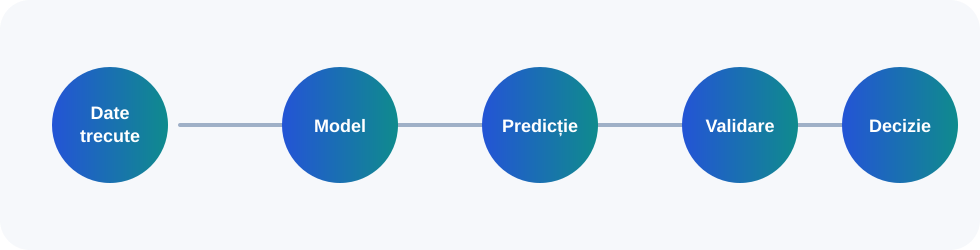

În mecanica clasică, timpul este considerat absolut, universal și același pentru toți observatorii. Relativitatea restrânsă modifică această imagine: măsurătorile de timp și spațiu depind de sistemul de referință, iar simultaneitatea poate fi relativă.
s² = c²Δt² – Δx² – Δy² – Δz²
| Criteriu | Mecanica clasică | Relativitatea restrânsă |
|---|
| Timpul | Universal, același pentru toți observatorii. | Depinde de sistemul de referință; simultaneitatea poate fi relativă. |
| Spațiul | Cadru separat de timp. | Legat de timp într-o structură unitară: spațiu-timp. |
| Domeniu | Viteze mici față de viteza luminii. | Viteze mari, particule, cosmologie, măsurători de precizie. |
Relevanță
Fizica arată că măsurarea depinde de cadrul de referință și de condițiile observației, idee utilă și pentru gândirea critică.
În chimie, timpul devine vizibil prin transformare: o substanță se consumă, alta se formează, se modifică o culoare, apare un precipitat sau se degajă un gaz. Studiul vitezei reacțiilor explică ritmul acestor transformări.
v = k[A]m[B]n
| Factor | Efect general | Explicație microscopică |
|---|
| Temperatura | Accelerează frecvent reacția. | Particulele au energie cinetică mai mare. |
| Concentrația | Poate crește viteza. | Ciocnirile dintre particule devin mai frecvente. |
| Catalizatorul | Accelerează reacția fără a fi consumat. | Oferă o cale alternativă cu energie de activare mai mică. |
Relevanță
A controla timpul unei reacții înseamnă a controla eficiența, siguranța, costul și impactul asupra mediului.
În biologie, timpul nu este doar timpul ceasului, ci timpul proceselor vii. Un organism are vârstă cronologică, dar celulele, țesuturile și organele pot îmbătrâni în ritmuri diferite.
Percepția spațiului depinde de sistemul nervos, care selectează, compară și interpretează informația. Iluziile vizuale arată că spațiul perceput este o construcție biologică.
| Proces biologic | Legătura cu timpul | Legătura cu spațiul |
|---|
| Scurtarea telomerilor | Apare treptat prin diviziuni celulare repetate. | Se produce la capetele cromozomilor. |
| Stres oxidativ | Se acumulează în timp. | Afectează membrane, proteine, ADN și organite. |
| Percepție vizuală | Se modifică prin dezvoltare, experiență și vârstă. | Creierul construiește spațiul perceput din indicii vizuali. |
Relevanță
Tema este importantă pentru medicina preventivă, neuroștiințe, educația pentru sănătate și designul mediilor vizuale.
Istoria ordonează evenimentele prin succesiune, durată și cauzalitate, dar timpul istoric nu este identic cu simpla cronologie. Spațiul istoric include frontiere, drumuri comerciale, orașe, porturi, regiuni și zone de conflict.
| Tip de timp istoric | Caracteristică | Întrebare |
|---|
| Timpul evenimentului | Scurt, vizibil, legat de decizii și fapte concrete. | Ce s-a întâmplat într-o anumită zi? |
| Timpul conjuncturii | Mediu, legat de cicluri economice, sociale și politice. | Cum se schimbă o societate într-o generație? |
| Timpul lung | Lent, structural, legat de geografie, mentalități și instituții. | Ce elemente profunde influențează evoluția unei regiuni? |
Relevanță
Istoria formează o memorie critică și ajută la interpretarea discursurilor publice, a identităților și a conflictelor.
Geografia studiază spațiul ca organizare a mediului natural și uman. Tema poate fi urmărită la scara universului observabil și la scara spațiului european transformat de globalizare.
Pentru că lumina are o viteză finită, a privi foarte departe în spațiu înseamnă a privi în trecut.
| Scară spațială | Cum apare timpul? | Probleme relevante |
|---|
| Univers observabil | Distanța cosmică este legată de timpul parcurs de lumină. | Originea și evoluția universului. |
| Europa globalizată | Teritoriile se transformă prin fluxuri economice, migrații și infrastructuri. | Transport, dezvoltare regională, urbanizare, mediu. |
| Localitatea | Spațiul trăit se schimbă prin mobilitate și digitalizare. | Accesibilitate, identitate locală, calitatea vieții. |
Relevanță
A înțelege spațiul în timp înseamnă a înțelege că teritoriile se transformă prin decizii și procese naturale sau sociale.
Filosofia întreabă ce sunt spațiul și timpul: realități independente, relații între lucruri, forme ale percepției sau rezultate ale măsurării. Răspunsurile diferite modifică felul în care înțelegem cunoașterea.
| Gânditor / perspectivă | Idee principală | Implicație |
|---|
| Newton | Spațiu și timp absolute. | Realitatea are un cadru independent de observator. |
| Leibniz | Spațiul și timpul sunt relații. | Nu există spațiu gol ca realitate separată de lucruri. |
| Kant | Spațiul și timpul sunt forme a priori ale intuiției. | Experiența umană este structurată înainte de orice observație concretă. |
| Einstein | Măsurarea depinde de sistemul de referință. | Obiectivitatea se formulează prin relații între observatori și evenimente. |
Relevanță
Filosofia clarifică sensurile termenilor și previne folosirea lor identică în contexte diferite.
Din perspectivă religioasă creștină, spațiul și timpul nu sunt doar coordonate fizice, ci pot deveni purtătoare de sens spiritual. Timpul liturgic organizează viața credincioșilor prin sărbători, perioade de pregătire și momente de comemorare.
| Concept | Descriere | Rol în viața comunității |
|---|
| Timp liturgic | Ritm al sărbătorilor și perioadelor religioase. | Organizează memoria, pregătirea și participarea. |
| Timp istoric | Succesiune a evenimentelor concrete ale comunităților. | Păstrează continuitatea tradiției. |
| Spațiul Bisericii | Loc arhitectural și simbolic. | Devine spațiu al comuniunii și al rugăciunii. |
| Comuniune | Relație între credincioși și cu Dumnezeu. | Transformă spațiul fizic în spațiu spiritual și comunitar. |
Relevanță
Religia introduce dimensiunea valorilor: timpul poate fi ocazie de creștere spirituală, iar spațiul poate deveni loc al comuniunii.
În informatică, spațiul și timpul sunt transformate în date: valori măsurate în timp, coordonate geografice, imagini satelitare, tranzacții economice, temperaturi sau semnale. Analiza predictivă folosește date istorice pentru a estima rezultate viitoare.

Diagramă originală, realizată pe baza documentației proiectului.
| Etapă | Ce se întâmplă? | Legătura cu spațiul și timpul |
|---|
| Date trecute | Se colectează serii istorice, imagini, măsurători sau evenimente. | Trecutul devine memorie digitală. |
| Model | Algoritmul învață tipare și relații. | Spațiul și timpul sunt codificate în variabile. |
| Predicție | Se estimează rezultate posibile. | Viitorul este exprimat probabilistic. |
| Validare | Rezultatele sunt comparate cu date reale. | Timpul testează dacă modelul rămâne corect. |
| Decizie | Oamenii folosesc predicția cu prudență. | Responsabilitatea rămâne umană și contextuală. |
Relevanță
IA nu „vede” viitorul în sens sigur, ci calculează probabilități, detectează tipare și oferă estimări dependente de calitatea datelor.